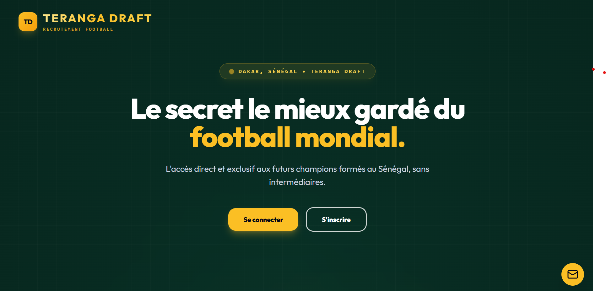

SaaS
En conception
Teranga Draft
Plateforme web (SaaS) mettant en relation joueurs de football et recruteurs en Afrique de l'Ouest, avec un focus initial sur le Sénégal (académies, clubs de Ligue 1/Ligue 2). Projet de fin d'année en Licence 2 Informatique.